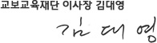

HOME > 재단소개 > 인사말
HOME > 재단소개 > 인사말
인사말
교보생명교육문화재단이 '교보교육재단'으로 새롭게 출발합니다.
교육(敎育)'이란 한자는 《맹자(孟子)》의 〈得天下英才而敎育之三樂也 천하의 영재를 얻어서 이들을 교육하는 것이 세 번째 즐거움이다.〉란 글에서 유래되었다고 합니다.
‘敎'는 아이의 잘못을 가르친다는 뜻이고, ‘育'은 아이를 살찌게 한다는 뜻으로 기른다는 의미가 됩니다. 즉 교육은 인간의 내적·외적 능력을 기르고 성숙을 도모해 인간의 가치를 높이고자 하는 행위이며, 개인의 성장과 발달을 넘어 우리 사회의 현주소를 반영하는 동시에 미래를 예측하는 척도가 됩니다.
교보생명의 창립자이신 大山 신용호 선생은 부존자원이 없는 우리나라에서 국가발전의 원천이자 민족의 미래는 ‘교육’이라는 신념으로 일찍이 교육의 중요성을 깨닫고 있었습니다.
이러한 신념은 교육입국과 경제자립의 실천이념을 바탕에 둔 ‘국민교육진흥’과 ‘민족자본형성’이라는 교보생명보험(주)의 창립이념에도 잘 나타나 있습니다.
大山 선생은 이러한 교육철학을 바탕으로 단일면적으로는 세계 최대 규모인 교보문고(1980년)를 설립하는 등 교육입국의 핵심인 인재양성을 위해 매진하였습니다.
교보교육재단은 ‘국민교육진흥’과 ‘민족문화창달’에 이바지하기 위해서 1997년 설립되어, 지난 18년간 인재양성 사업과 더불어 환경과 복지사업 등 다양한 공익사업을 펼쳐왔습니다.
재단은 그동안의 성과에 안주하지 않고 창립정신인 ‘교육의 공익적 가치실현’을 적극적으로 실현하기 위해 ‘타인을 배려하고 나눔과 생명을 소중히 여기는 인성을 갖춘 인재양성’을 새로운 비전으로 삼아, ‘교육전문재단’으로 새롭게 거듭나고자 합니다.
이를 위해 교보교육재단은 기존에 진행해 오던 사업들의 장점을 더욱 발전시키면서 장학사업, 리더십교육, 인성교육, 생명교육, 교보교육대상 시상 사업이라는 큰 틀에서 교육 사업을 운영해 나갈 것입니다.
- 장학사업을 통해서 어려운 환경에서도 배움에 대한 열정을 가진 청소년들이 꿈을 이룰 수 있도록 돕겠습니다.
- 인성교육을 통해서 윤리적 인격을 갖추고, 양심과 원칙을 따르는 정신이 건강한 사람을 키우겠습니다.
- 리더십교육을 통해 실력을 갖추고 남을 배려하는 마음으로 어려운 이웃의 손을 잡아주는 가슴 따뜻한 사람을 키우겠습니다.
- 생명교육을 통해서 생명존엄의 가치와 지구공동체의 지속가능성에 대해 탐구하고 실천하는 사람을 키우겠습니다.
- 교보교육대상 시상을 통해서 교육의 참의미를 되찾고, 시민인성 함양을 비롯하여 더불어 사는 공동체의 가치, 생명존중사상 확산에 이바지하겠습니다.
지금껏 아낌없는 애정과 관심을 보내주신 여러분께 깊이 감사드리며, 앞으로도 변치 않는 관심과 성원을 부탁드립니다. 감사합니다.